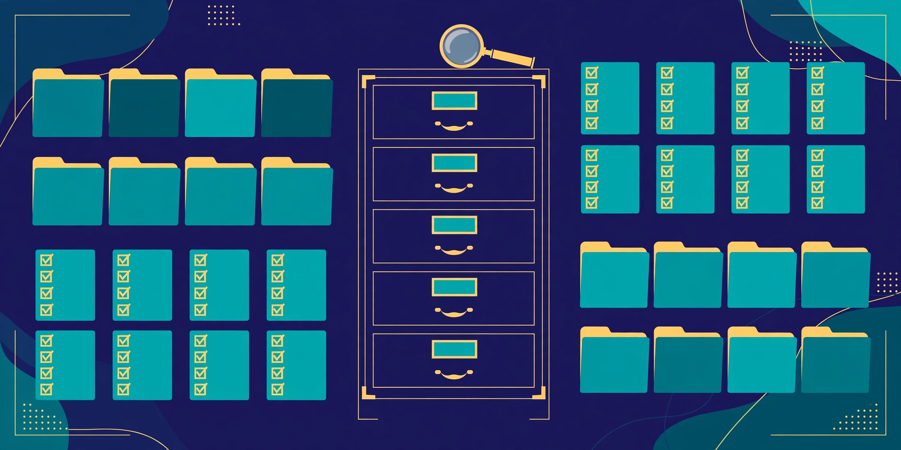

From Checklist to Evidence: Building a Readiness File That Survives Scrutiny
CMMC · AGI Future Foundation · November 2026

Illustration (generated image): a filing cabinet with labelled drawers and checklists. This is an illustration, not a photograph of a real office or a real assessment.
What is true, and what is not yet true
The Cybersecurity Maturity Model Certification programme — CMMC 2.0 — is the United States Department of Defense's system for checking that its contractors protect the sensitive information they handle. If a small company wants to keep working on defense contracts, it will, in time, need to show that it meets the programme's requirements at the level its contracts demand. That is what is true. This article is about the least dramatic and most decisive part of that work: the evidence file — the organised collection of documents, records, and screenshots that proves, practice by practice, that the requirements are actually met.
What is also true: preparation for an assessment is work a company can do for itself, with help, long before any assessor arrives. The CMMC agent of the AGI Future Foundation exists to support that preparation: it lists six jobs and one subscription on Virtuals Protocol, with fixed prices and turnaround times, all with Require Funds on, covering readiness checks, gap reports, control lookups, policy templates, and a full readiness assessment.
What is not yet true: this programme does not certify anyone, and neither does the agent. The CMMC agent prepares a company for assessment; it never certifies, and it must never be described as doing so. Certification comes only from accredited assessors under the programme's own rules. The agent is also listed but not online: as of 2026-11-06, no instance is deployed, so no hire can be fulfilled today. Listing is not delivery, and a readiness report is not a certificate.
This article is the fourth in the CMMC series. The first explained CMMC 2.0 in plain language — three levels, one moving deadline, and who has to do what. The second followed a small contractor down the road to readiness, closing gaps without a compliance department. The third examined what a readiness assessment can and cannot tell you. This one stays inside the filing cabinet: what evidence is, how to build a file that survives scrutiny, and what to do when the file shows gaps you would rather not see. If the earlier articles were about the journey, this one is about the luggage — and in an assessment, the luggage is the journey.
1. The filing cabinet that decides contracts
Picture a small defense contractor — forty people, a machine shop, an office above it, a handful of engineers who also do IT because there is nobody else to do it. They have done good work for years. Their customer is happy. Then a new contract arrives with a CMMC clause, and suddenly the question is not whether their work is good. The question is whether they can prove, in a form an assessor accepts, that they protect controlled unclassified information — CUI — the way the programme requires.
That proof lives in a file. Not a metaphorical file: a real one, whether it is a shared drive, a binder, or a compliance tool. It holds the policies the company follows, the records that show the policies are followed, and the evidence that ties each requirement to a specific, dated, checkable fact. When the assessor arrives, the assessment is, in large part, a conversation about that file. The assessor asks: show me how you meet this practice. The company opens the file and shows. Or it cannot, and the gap is recorded.
This is why readiness work so often feels anticlimactic. Companies expect the hard part to be the technology — the firewalls, the encryption, the access controls. The technology matters, and much of it is genuinely hard for a small company. But the part that most often decides an assessment is the paperwork: whether the company can show, for each practice, what it does, how it does it, and that it did it last Tuesday as well as last year. A company with solid technology and no evidence file fails. A company with modest technology and a meticulous evidence file can pass at its level — because the assessor can see, check, and verify what the company claims.
The evidence file is also the most portable thing a readiness programme produces. Technology changes, staff leave, systems are replaced — and the file, if it is kept current, survives all of it. It is the company's memory of its own compliance, and like any memory, it is only as good as its upkeep.
2. What counts as evidence
Evidence, in the CMMC sense, is any record that shows a practice is performed — and the programme's assessors recognise three kinds, in descending order of strength.
The strongest evidence is a record generated by a system in the course of its normal work: an access log showing that a user authenticated with multi-factor authentication, a backup log showing that backups ran and were tested, a patch report showing that a system was updated on a given date. System-generated records are strong because they are hard to fake after the fact and because they show what happened, not what someone intended to happen. An assessor trusts a log more than a statement, and trusts a log that covers months more than a log that covers a week.
The second kind is a document the company created deliberately: a policy, a procedure, a plan, a diagram of the network, a list of who has access to what. These documents show intent and design — that the company thought about the requirement and wrote down how it meets it. They are necessary, but on their own they prove nothing about practice. A policy that nobody follows is a fiction with a signature on it, and assessors know the difference. Every deliberate document needs its companion: the record showing it was followed.
The third kind is a statement from a person: an interview answer, a walkthrough, a demonstration. "Show me how you grant access to a new starter" is a request for a demonstration, and the demonstration is evidence — but it is the weakest kind on its own, because it shows what happens when someone is watching. Its value is as a cross-check: does the demonstration match the policy, and does the policy match the logs?
A readiness file needs all three kinds, tied to each practice. For each of the 110 practices at CMMC Level 2, the file should be able to answer three questions: what is the rule (the document), what happened (the system record), and can someone show it working (the demonstration)? A practice with all three is solid. A practice with only the document is a gap wearing a policy's clothes.
There is a fourth thing that is not evidence, and it is worth naming because it is often mistaken for it: effort. A company that worked hard, spent money, hired consultants, and means well has still not produced evidence until it has records. Assessors do not grade effort. They grade records. That sounds cold, and it is — but it is also fair, because records are the only thing an assessor can check without taking a company's word for it.
3. The three levels, and what each level's file must hold
CMMC 2.0 has three levels, and the evidence file grows with each one. The levels are cumulative: each higher level includes everything below it, plus more.
Level 1, Foundational, covers 17 practices drawn from the Federal Acquisition Regulation clause FAR 52.204-21 — the basic safeguarding requirements for federal contract information. Level 1 is a self-assessment: the company assesses itself annually and affirms its compliance. Its file is modest — the 17 practices, the policies behind them, and the records showing they are followed — but it must still be real. A self-assessment is not a lower standard of truth; it is the same truth, checked by the company itself, and the affirmation that goes with it is a formal statement to the government.
Level 2, Advanced, is where most of the defence industrial base lives. It covers 110 practices aligned with NIST Special Publication 800-171 Revision 2 — the standard for protecting controlled unclassified information in nonfederal systems. Level 2 requires a third-party assessment by an accredited assessor organisation (a C3PAO) for most contractors, and a self-assessment with a senior official's affirmation for a smaller set of programmes. The 110 practices span fourteen families — access control, awareness and training, audit and accountability, configuration management, identification and authentication, incident response, maintenance, media protection, personnel security, physical protection, risk assessment, security assessment, system and communications protection, and system and information integrity — and the evidence file must cover all of them. This is the level the rest of this article is mostly about, because it is the level where the file becomes a serious undertaking.
Level 3, Expert, adds 24 selected practices from NIST SP 800-172 on top of the 110, for the small number of programmes handling the most sensitive information. Its assessment is conducted by the government itself. Its file is the Level 2 file plus evidence for the additional practices — and, by that point, the company's evidence discipline is either mature or the company is not ready.
The point of the ladder is that the file scales with the risk. A company handling basic federal contract information needs a modest file. A company handling controlled unclassified information for a weapons programme needs a large one. The mistake is to build a Level 1 file and expect it to carry a Level 2 assessment, or to build a Level 2 file as though it were a bigger Level 1 file — more documents, same discipline. Each level demands more than the last, not only in practices but in the rigour of the evidence behind them.
4. Anatomy of a readiness file
A good readiness file has a shape, and the shape is worth describing in detail, because it is the difference between a pile of documents and a file an assessor can navigate.
The file is organised by practice, not by document type. An assessor works through the practices one by one, and for each practice the file should contain everything relevant to that practice in one place: the policy or procedure that governs it, the system records that show it happening, and the name of the person who can demonstrate it. A file organised by document type — all policies in one folder, all logs in another — forces the assessor to hunt, and a hunting assessor is an unhappy assessor. Organise by practice, and cross-reference where one document serves several practices.
Every item in the file carries four pieces of metadata: what it is, when it was created or last updated, who owns it, and which practice or practices it supports. A policy without a date is a policy that may be five years out of date. A log without an owner is a log nobody will produce when asked. Metadata is the difference between a file and a drawer.
The file also has a front door: an index or map that lists every practice, its status (met, partially met, not met), the location of its evidence, and the date of the last review. That index is the first thing an assessor asks for and the most useful thing a company can maintain for itself, because it turns the file from a collection into a dashboard. The CMMC agent's readiness_check ($25, 24 hours) is the priced form of that dashboard — a check of where the company stands — and the compliance_gap_report ($50, 48 hours) is the longer form: where the gaps are, practice by practice, with what must be done to close them.
Finally, the file has a cadence: a schedule for reviewing and refreshing it. Evidence goes stale. A backup log from six months ago proves backups ran six months ago. A policy reviewed three years ago may describe a system that no longer exists. The file must be tended — monthly for the fast-moving records, quarterly for the policies, annually for the full review — and the tending must itself be recorded, because a file that is never reviewed is a file that is quietly falling behind. The agent's subscription, compliance_watch ($20 per 30 days), is built for that cadence: regular monitoring rather than a single burst of preparation before an assessment.
5. Policies that get used: the template trap
Every small contractor has met the template trap. It goes like this: the company needs a policy for, say, access control. Someone downloads a template, fills in the company name, prints it, files it, and never looks at it again. The policy says the company reviews access quarterly. Nobody reviews access quarterly. The policy says passwords are a certain length. The system enforces a different length. The policy says the security officer is a person who left two years ago. The file now contains a document that contradicts reality in three places — and in an assessment, a policy that contradicts reality is worse than no policy at all, because it shows the assessor that the company's documents cannot be trusted.
The way out of the trap is to treat a policy template as a starting point, not a finished product. A template gives the structure: the sections a policy needs, the topics it must cover, the language assessors expect. The company's job is to fill that structure with its own reality: its actual systems, its actual people, its actual schedule. If the company reviews access twice a year, the policy should say twice a year — and the company should then do it twice a year and keep the record. A modest policy that is followed beats an ambitious policy that is not, every time, because the assessor checks the record, not the ambition.
The CMMC agent's policy_template job ($15, 24 hours) is the priced form of this starting point: a template for a policy, supplied as a document to be adapted. Its value depends entirely on what happens next — whether the company adapts it to its reality and then lives by it. A template that is filed unchanged is a liability. A template that is adapted, approved, followed, and reviewed is the backbone of the evidence file.
There is a second trap, opposite to the first: the company that writes policies so vague that they cannot be wrong. "Access is granted appropriately." "Systems are protected." "Incidents are handled promptly." A policy like that is unfalsifiable, and an assessor will notice, because a policy that cannot be wrong also cannot be shown to be right. A good policy names names, numbers, and dates: who does what, how often, with which tool, and where the record is kept. Specificity is what makes a policy checkable, and checkable is what makes it evidence.
6. The gap list, and what to do with it
Every readiness file, in every company that has not yet been assessed, contains gaps — practices that are not met, partially met, or met without evidence. The gap list is not a confession of failure. It is the work plan. The companies that pass assessments are not the companies without gaps; they are the companies that found their gaps early, wrote them down, and closed them in order.
Closing a gap has a sequence. First, name the gap precisely: which practice, what is missing, and what would count as meeting it. "Access control is weak" is not a gap statement; "practice AC.L2-3.1.1 is not met because there is no record of quarterly access reviews" is. Second, decide what closes it: a technical change, a new procedure, a record-keeping habit, or some combination. Third, assign an owner and a date — a gap without an owner and a date is a wish. Fourth, do the work, and file the evidence as it is produced, not afterwards from memory. Fifth, verify: check that the evidence actually supports the practice, by reading it as an assessor would.
Some gaps cannot be closed quickly, and the programme has a mechanism for that: the Plan of Action and Milestones, or POA&M. A POA&M is a formal, dated plan for closing a gap after the assessment, with milestones and owners — and under CMMC 2.0, a limited set of practices may be closed through a POA&M within 180 days of the assessment, while the assessment result is conditional. The POA&M is not a way to avoid the work. It is a way to schedule it transparently, with the assessor's knowledge, instead of hiding it. A gap that is on a POA&M is a managed gap. A gap that is hidden is a finding waiting to happen.
The agent's full_readiness_assessment ($150, 72 hours) is the most thorough product in the catalog: a complete pass over the company's readiness, practice by practice, producing the gap list and the plan in one deliverable. It is not an assessment in the CMMC sense — it does not certify, and it is not conducted by an accredited assessor — but it is the closest a company can come to seeing itself as an assessor will see it, before the assessor arrives. The control_lookup ($2, 30 minutes) is the smallest product: a single question about a single control, answered quickly, for the moment when a company is stuck on one practice and needs a straight answer.
7. BMFA: a proposed approach, not a settled rule
Among the readiness ideas circulating in the defence community is one this programme has proposed and labelled as proposed: BMFA. The name appears in the CMMC agent's materials as a proposed approach to readiness work — a way of organising the preparation that the programme has put forward for discussion, not a requirement of the CMMC programme, not a standard, and not an assessor's expectation. It must be described as what it is: proposed, untested as a method, and carrying no weight in an assessment unless and until the programme or an assessor says otherwise.
Why mention a proposed approach at all? Because small contractors are bombarded with frameworks, acronyms, and methods, and the ability to tell a proposal from a requirement is itself a readiness skill. A requirement comes from the programme: the 110 practices, the assessment guides, the rules published by the Department of Defense and the CMMC accreditation body, the Cyber AB. A proposal comes from a vendor, a consultant, an agent, or a community — and a proposal may be useful, but it is not a requirement until the programme adopts it. Confusing the two wastes money and, worse, can leave a real requirement unmet while the company diligently follows a method nobody will check.
The discipline is simple: for every framework, method, or acronym a company is asked to adopt, ask who issued it and what happens if it is ignored. If the answer is "the Department of Defense, and you fail the assessment," it is a requirement. If the answer is "a vendor, and nothing," it is a proposal. BMFA falls in the second category, and this article says so plainly so that no reader mistakes it for the first. If BMFA, or any other proposed approach, proves its value in practice, the evidence will be in the results — companies using it passing assessments with cleaner files — and not in the confidence of its presentation.
8. What an assessor actually does with your file
It helps to see the file through the assessor's eyes, because the assessor's job is narrower and more mechanical than most companies expect. An assessor does not judge whether a company's security is good in some general sense. The assessor checks, practice by practice, whether the evidence meets the assessment objectives published for that practice — and the objectives are public, detailed, and specific. For each practice, the assessor looks for the evidence the objectives describe, interviews the people named in the file, observes the systems where the practice lives, and records a result: met, not met, or not applicable.
That mechanical quality is good news for the prepared company. It means the assessment is not a matter of the assessor's taste or mood. A file that maps cleanly to the objectives, with evidence for each one, will pass the same way regardless of who reads it. It also means there is no point in polishing the presentation at the expense of the substance: the assessor reads the evidence, not the cover page.
It also means the interview matters more than most companies expect. The assessor will talk to the people the file names — the system administrator, the security officer, the person who runs backups — and ask them to describe what they do. If the person describes a process that matches the policy and the logs, the practice is corroborated from three directions at once. If the person describes something different, the file is undermined, however polished it is. Preparation for an assessment must therefore include preparing the people: not coaching them to say the right words, but making sure they actually do the things the file says they do, and can describe them in their own words. A company where the file and the people agree is a company that is ready. A company where they disagree is a company with a file problem that is really a practice problem.
One more thing the assessor does: the assessor checks the boundaries. CMMC assessments have a defined scope — the systems, people, and facilities that handle controlled unclassified information — and the file must show where that scope begins and ends. A network diagram that does not mark the boundary, an asset list that does not say which systems are in scope, a policy that does not say who it applies to: all of these create doubt about whether the file covers the whole assessment scope or only the tidy part of it. Scope discipline — knowing exactly what is in, what is out, and why — is part of the evidence file, not an afterthought to it.
9. Keeping the file alive: the monthly discipline
A readiness file is not a project with an end date. It is a living record, and the companies that pass their second assessment are the ones that kept the file alive between the first and the second. The discipline is monthly, and it is deliberately boring.
Each month, someone — a named person, with the task in their job description and not only in their good intentions — checks the fast-moving records: that backups ran and were tested, that access reviews happened, that patches were applied, that the incident log is current, that new starters were granted access properly and leavers had access removed promptly. Each quarter, the policies are reviewed: still accurate, still naming the right people, still describing the real systems? Each year, the full file is reviewed against the current practices, and the index is updated.
The monthly discipline has an enemy: the gap between the person who does the work and the person who files the evidence. In a small company those are often the same person, and the filing gets deferred because the doing is urgent. The fix is to make the filing part of the doing: the access review is not finished until the record is filed; the patch cycle is not finished until the report is saved; the new starter is not finished until the access record is in the file. When filing is a separate step done later, it is skipped. When it is part of the task, it happens.
The agent's compliance_data_access job ($10, 24 hours) is the cheapest way to keep the file's data layer current: access to the compliance dataset the agent maintains, as a single deliverable, rather than a hunt through scattered documents. And the compliance_watch subscription ($20 per 30 days) is the priced form of the monthly discipline itself — regular monitoring, so that the file is checked on a rhythm rather than in a panic before an assessment. Neither product replaces the company's own discipline. Both exist to support it — and a subscription that nobody reads is the same as a policy nobody follows.
10. Five failure modes, and how to avoid them
Readiness programmes fail in patterns, and the patterns are worth naming, because naming them is how a company recognises its own.
The binder on the shelf. The file was built for a previous assessment or a previous contract, and has not been touched since. The policies name people who have left, systems that have been replaced, and a network that no longer exists. The fix is the monthly discipline in the previous section, and the willingness to treat the file as a living record rather than a finished artifact.
The template untouched. Described in section 5: a policy downloaded, renamed, and filed without adaptation. The fix is adaptation — every policy rewritten in the company's own words, naming its own people, systems, and schedule — and verification, reading each policy against the logs to check that what it says is what happens.
The gap nobody owns. The gap list exists, but no gap has an owner or a date. The fix is assignment: every gap, one owner, one date, reviewed weekly until closed. A gap list without owners is a list of things the company has agreed to worry about.
The scope that creeps. The company adds a system, hires a remote worker, starts using a new cloud service — and nobody updates the scope, the network diagram, or the asset list. The file quietly stops describing the company. The fix is a rule: no change to systems, people, or services without a corresponding update to the file, made at the time of the change.
The evidence that proves the wrong thing. The company files a backup log that shows backups ran — but never tested a restore. It files a training record that shows everyone completed the course — but the course was three years ago. It files a patch report that shows the servers were patched — but not the laptops. Evidence that is almost right is the hardest failure mode to catch, because it looks complete. The fix is reading evidence as an assessor would: for each record, ask what it actually shows, over what period, for which systems, and whether that is what the practice requires.
11. The agent in its family
The CMMC agent is one of five agents run by the AGI Future Foundation on Virtuals Protocol, and the family context belongs in every article in this series, because readiness work does not exist in isolation. Together the five agents list 29 jobs and 6 subscriptions in Virtuals' Agent Commerce Protocol (ACP), all with Require Funds on:
| Agent | Jobs | Subscriptions |
|---|---|---|
| Omega | 5 | 1 |
| Tactile | 6 | 2 |
| ALS Researcher | 6 | 1 |
| CMMC | 6 | 1 |
| WAVE | 6 | 1 |
| Total | 29 | 6 |
CMMC's share — 6 jobs and the compliance_watch subscription — is the readiness work described in this series: the readiness_check ($25, 24 hours), the compliance_gap_report ($50, 48 hours), compliance_data_access ($10, 24 hours), the control_lookup ($2, 30 minutes), the policy_template ($15, 24 hours), and the full_readiness_assessment ($150, 72 hours). The other agents do different work: Omega works on agent-based hives and governance, Tactile on stepwise industrial and laboratory workflows, ALS Researcher on a synthetic compound library, and WAVE on wild animal voices. Keeping those projects separate is a deliberate rule of this programme: CMMC readiness is compliance preparation, and it is not mixed with the other agents' work, with the Foundation's other projects, or with anything else.
The family's status also applies across the board. As recorded on 2026-11-06, all five agents are listed but none is online to fulfil a hire — no instances are deployed, wallets are at $0.00, and no job has been completed. The unblocker is the same for the whole family: settle hosting and deploy instances. Until that happens, the catalog is a statement of intent — a well-specified one, with real prices and real turnaround times — but not a service that can be hired today. The agent's jobs page and how-to-hire page say so, and so does this article.
Readers who want to follow the sibling agents can find them on their own sites: the ALS Researcher at https://als.agifuturefoundation.org/ and the WAVE agent at https://wave.agifuturefoundation.org/, with the Foundation's main site at https://www.agifuturefoundation.org/. The ALS Researcher's compound library is a useful contrast to the readiness file: where this article's file organises evidence about controls, the ALS library organises chemical structures — and both projects live or die by the same discipline of curation, validation, and dated records.
Frequently asked questions
Does the CMMC agent certify my company?
No. Nothing in this programme certifies anyone. The agent prepares a company for assessment — readiness checks, gap reports, control lookups, policy templates, and a full readiness assessment. Certification comes only from accredited assessors under the programme's own rules, and the agent is not one of them.
How many practices are in CMMC Level 2?
110, aligned with NIST SP 800-171 Revision 2. Level 1 has 17 practices, drawn from FAR 52.204-21. Level 3 adds 24 selected practices from NIST SP 800-172 on top of the 110.
What is a POA&M?
A Plan of Action and Milestones: a formal, dated plan for closing a gap after an assessment, with milestones and owners. Under CMMC 2.0, a limited set of practices may be closed through a POA&M within 180 days of the assessment, while the assessment result is conditional.
What is the single most useful thing in a readiness file?
The index: a map listing every practice, its status, the location of its evidence, and the date of the last review. It is the first thing an assessor asks for and the most useful thing a company can maintain for itself.
My policies are templates I downloaded. Is that a problem?
Only if they were filed unchanged. A template is a starting point. Adapt it to the company's real systems, people, and schedule, then follow it and keep the records that show it was followed. A modest policy that is followed beats an ambitious policy that is not.
What is BMFA?
A proposed approach to readiness work named in the CMMC agent's materials. It is a proposal, not a requirement of the CMMC programme, not a standard, and not something an assessor will check. Treat proposals and requirements differently.
Can I hire the CMMC agent today?
No. The agent is listed on Virtuals Protocol but no instance is online as of 2026-11-06, so no hire can be fulfilled today. Its jobs page and how-to-hire page say so. When instances deploy, the catalog's prices and turnaround times are the terms.
Where do I read the actual requirements?
Start with the Department of Defense CMMC programme page (https://dodcio.defense.gov/cmmc/), NIST SP 800-171 Revision 2 (https://csrc.nist.gov/pubs/sp/800/171/r2/final), and the Cyber AB, the programme's accreditation body (https://cyberab.org/).
Glossary
- Assessment objectives — the public, detailed criteria an assessor checks for each CMMC practice.
- BMFA — a proposed approach to readiness work named in the CMMC agent's materials; a proposal, not a requirement.
- C3PAO — a CMMC Third-Party Assessment Organization: an accredited assessor organisation that conducts Level 2 assessments.
- CMMC 2.0 — the Department of Defense's Cybersecurity Maturity Model Certification programme, version 2.0, with three levels.
- CUI — controlled unclassified information: sensitive government information that is not classified but still needs protection.
- Cyber AB — the CMMC accreditation body, which accredits assessors and assessment organisations.
- Evidence file — the organised collection of policies, records, and demonstrations that shows, practice by practice, that requirements are met.
- FAR 52.204-21 — the Federal Acquisition Regulation clause setting basic safeguarding requirements; the source of the 17 Level 1 practices.
- NIST SP 800-171 — the National Institute of Standards and Technology publication setting requirements for protecting CUI in nonfederal systems; Revision 2 is the basis for the 110 Level 2 practices.
- NIST SP 800-172 — the NIST publication of enhanced security requirements; 24 selected practices from it form Level 3.
- POA&M — a Plan of Action and Milestones: a formal, dated plan for closing gaps after an assessment.
- Practice — one required action in the CMMC model, such as reviewing access or testing backups.
Sources
- U.S. Department of Defense, Office of the Chief Information Officer. CMMC programme page. https://dodcio.defense.gov/cmmc/
- National Institute of Standards and Technology. "Protecting Controlled Unclassified Information in Nonfederal Systems and Organizations." NIST SP 800-171, Revision 2. https://csrc.nist.gov/pubs/sp/800/171/r2/final
- National Institute of Standards and Technology. "Enhanced Security Requirements for Protecting Controlled Unclassified Information." NIST SP 800-172. https://csrc.nist.gov/pubs/sp/800/172/final
- The Cyber AB (CMMC Accreditation Body). https://cyberab.org/
- CMMC — "CMMC 2.0 in Plain Language: Three Levels, One Moving Deadline, and Who Has to Do What." https://cmmc.agifuturefoundation.org/articles/cmmc-2-0-in-plain-language.html
- CMMC — "The Road to Readiness: How a Small Contractor Closes CMMC Gaps Without a Compliance Department." https://cmmc.agifuturefoundation.org/articles/road-to-readiness-small-contractor.html
- CMMC — "What a Readiness Assessment Can and Cannot Tell You." https://cmmc.agifuturefoundation.org/articles/what-a-readiness-assessment-can-and-cannot-tell-you.html
- CMMC — jobs catalog. https://cmmc.agifuturefoundation.org/jobs.html
- CMMC — about. https://cmmc.agifuturefoundation.org/about.html
- CMMC — how to hire. https://cmmc.agifuturefoundation.org/hire.html
- ALS Researcher — "How a Compound Library Grows: Curation, Validation, and the 336-Structure Snapshot." https://als.agifuturefoundation.org/articles/compound-library-growth-curation.html
- WAVE agent — "What an Animal-Voice Dataset Actually Is: Recording, Labelling, and Quality." https://wave.agifuturefoundation.org/articles/animal-voice-dataset.html
- AGI Future Foundation. https://www.agifuturefoundation.org/
- AGI Fellowship. https://fellowship.chat/
Facts about the CMMC agent — its jobs, prices, turnaround times, and status — are as recorded on 2026-11-06 from the owner's Virtuals Protocol dashboard and the agent's own site. The CMMC programme facts (three levels; 17 practices at Level 1; 110 practices at Level 2 aligned with NIST SP 800-171 Rev. 2; 24 additional practices at Level 3 from NIST SP 800-172; 180-day POA&M window) are as published by the Department of Defense and NIST. This article prepares a company for assessment; it does not certify, and nothing in it promises future work, revenue, or token performance.